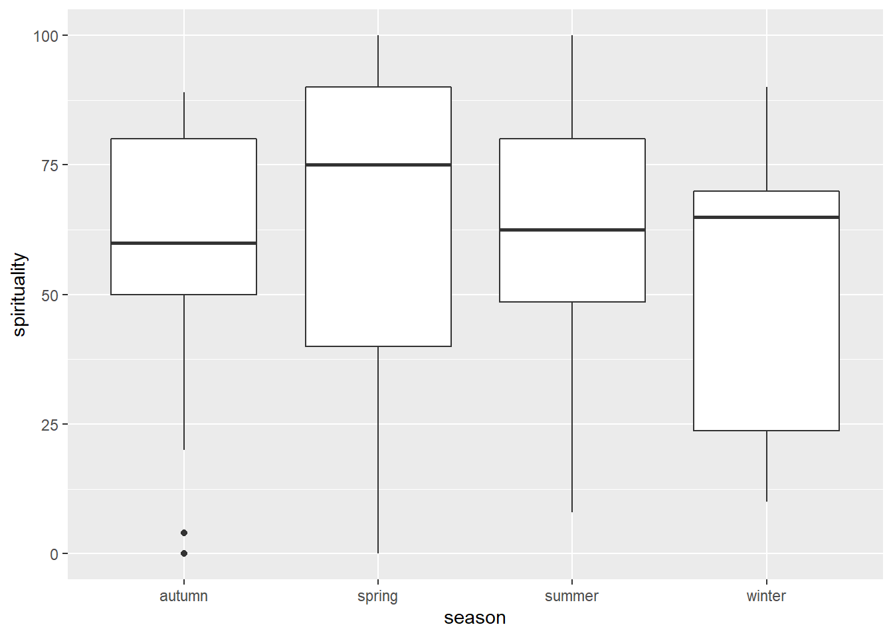

library(tidyverse)── Attaching packages ─────────────────────────────────────── tidyverse 1.3.2 ──
✔ ggplot2 3.3.6 ✔ purrr 0.3.5
✔ tibble 3.1.8 ✔ dplyr 1.0.10
✔ tidyr 1.2.1 ✔ stringr 1.4.1
✔ readr 2.1.3 ✔ forcats 0.5.2
── Conflicts ────────────────────────────────────────── tidyverse_conflicts() ──
✖ dplyr::filter() masks stats::filter()
✖ dplyr::lag() masks stats::lag()df <- read_csv("../../data/surveydata_allcourse22.csv") %>% filter(year==2022)Rows: 461 Columns: 20
── Column specification ────────────────────────────────────────────────────────
Delimiter: ","
chr (9): birthmonth, eyecolour, catdog, threewords, course, in_uk, gender, ...
dbl (11): height, year, optimism, spirituality, extraversion, agreeableness,...
ℹ Use `spec()` to retrieve the full column specification for this data.
ℹ Specify the column types or set `show_col_types = FALSE` to quiet this message.# make season
# ifelse
df %>% mutate(
season = case_when(
birthmonth %in% tolower(month.abb)[c(1,2,12)] ~ "winter",
birthmonth %in% tolower(month.abb)[3:5] ~ "spring",
birthmonth %in% tolower(month.abb)[6:8] ~ "summer",
birthmonth %in% tolower(month.abb)[9:11] ~ "autumn",
TRUE ~ NA_character_
),
season = factor(season)
) -> df
# horoscopes
lm(spirituality ~ season, df) %>% summary
Call:
lm(formula = spirituality ~ season, data = df)
Residuals:
Min 1Q Median 3Q Max
-64.714 -17.304 6.333 22.196 41.167
Coefficients:
Estimate Std. Error t value Pr(>|t|)
(Intercept) 54.692 8.058 6.787 4.39e-09 ***
seasonspring 10.022 10.254 0.977 0.332
seasonsummer 4.141 10.006 0.414 0.680
seasonwinter -1.192 12.221 -0.098 0.923
---
Signif. codes: 0 '***' 0.001 '**' 0.01 '*' 0.05 '.' 0.1 ' ' 1
Residual standard error: 29.06 on 64 degrees of freedom
Multiple R-squared: 0.02225, Adjusted R-squared: -0.02358
F-statistic: 0.4856 on 3 and 64 DF, p-value: 0.6935# boxplot
ggplot(df, aes(x=season,y=spirituality))+
geom_boxplot()
# coefs match to boxplot and group means
df %>% group_by(season) %>%
summarise(
m = mean(spirituality, na.rm=TRUE)
) %>%
mutate(
diffaut = m - m[1]
)# A tibble: 4 × 3
season m diffaut
<fct> <dbl> <dbl>
1 autumn 54.7 0
2 spring 64.7 10.0
3 summer 58.8 4.14
4 winter 53.5 -1.19lm(spirituality ~ season, df) %>% coef (Intercept) seasonspring seasonsummer seasonwinter
54.692308 10.021978 4.141026 -1.192308 # contrasts
lm(spirituality ~ season, df, contrasts = list(season="contr.sum")) %>% coef(Intercept) season1 season2 season3
57.9349817 -3.2426740 6.7793040 0.8983516